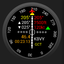
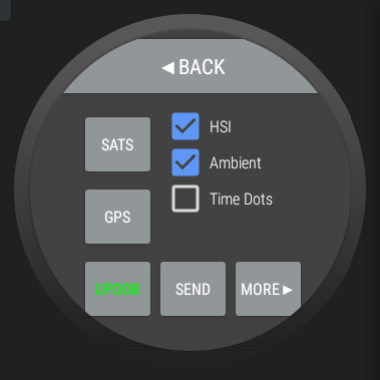
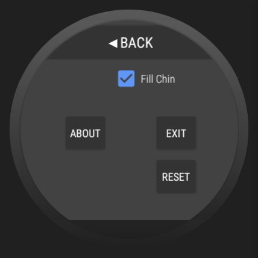

HSIWatch App for Android Watches
Always be skeptical regarding any information provided
by HSIWatch. Accept it only if and when it is confirmed by
navigation methods such as FAA approved chart visual references and
FAA approved electronic navigation systems.
EXPECT it to FAIL when someone's HeALTh or PROpeRTy is at RISk.
Privacy policy: The only personal information used by HSIWatch is location, which
is used only for updating the display and optionally forwarding it to other
devices, all at the user's explicit direction.
Contact us at
Page Map
| |
|
Waypoint Entry
Nav Mode Select
|
|
Nearest Airport
 |
|
Airport Information
|
| |
|
⇧ |
|
⇧ |
|
⇧ |
| start |
⇨ |
Nav Dial
 |
⇨ |
Moving Map
|
⇨ |
Runways
|
| |
|
⇩ |
|
⇩ |
|
⇩ |
| |
|
... menu pages ...
|
|
|
Nav Dial Page
| |
| OBS setting ▶ |
| course to waypoint ▶ |
| course from waypoint ▶ |
| |
| distance to waypoint ▶ |
| time to waypoint ▶ |
| |
| |
|
|
| |
| ◀ ground track |
| ◀ altitude |
| ◀ ground speed |
| |
| |
| ◀ waypoint ident |
| ◀ navigation mode |
| |
|
- OBS setting - where the yellow triangle is,
indicating selected course or radial.
- drag finger around number dial to change OBS
when in GCT,VOR,ADF modes
- LOC,LOCBC,ILS modes lock the OBS in place
- course to/from waypoint - indicates the
OBS setting needed to center the needle
- distance to waypoint - indicates nautical
miles to the selected waypoint. italics
indicate slant-range distance (when elevation
of waypoint is known), normal text indicates
over-the-ground distance.
- time to waypoint - distance / ground speed,
ie, time to waypoint if headed directly to waypoint.
--:--:-- indicates time in excess of 100 hours.
|
|
To access the other pages, touch near the center of the screen, and a diagram will
appear:
|
Swipe in the direction of the double arrows to select the function wanted:
- exit - close the app (must be swiped twice)
- map - open the moving map page
- menu - access the menu pages
- waypt - enter waypoint being navigated to
You must touch in the area of the menu to get the menu to appear.
Touching near the edges will rotate the nav dial (if current nav
mode allows it).
|
Menu Pages
|  |
- BACK - goes back to nav dial or moving map page
- SATS - show GPS satellite status (also has a magnetic compass)
- UPDDB - download database update (requires Internet access)
- GREEN - database is up to date and will remain so for a few days
- YELLOW - database is up to date but will expire soon
- RED - database is expired
- HSI - select HSI mode for nav dial (airplane always at top); else OBS with yellow triangle always at top
- Ambient - slow to 20 seconds per GPS sample in ambient mode; else maintain 1 second per sample
- Simplify - simplify nav dial page allowing text to be enlarged
- COMM - access bluetooth and UDP parameters
- MORE▶ - goes to next menu page
|
|  |
- BACK - goes back a page
- Fill Chin - has nav dial fill chin on devices with a chin
(only present on devices with a chin)
- ABOUT - display version and database expiration information
- SIM - display simulator parameter page
- EXIT - close app
- RESET - reset settings to factory defaults and purge database
|
Moving Map Page
| zoom out |
|
- GREEN - airports (up to 20 with longest runways)
- CYAN - VORs (if not 20 airports)
- YELLOW - range ring at half radius
- MAGENTA - course line and destination waypoint
course line shown is always great circle regardless of mode selected for nav dial page
|
| zoom in |
The moving map page can be accessed by swiping right-to-left on the
nav dial page.
To access the other pages from the moving map page, touch near the center of the screen and a diagram will appear:
|
Swipe in the direction of the double arrows to select the function wanted:
- back - go back to nav dial page
- menu - access the menu pages
- near - access nearest airport selection page
- rwys - display runway diagram for current airport
|
Voice Recognition
Voice can be used to input the waypoint identifier being navigated to on the
waypoint input page.
It can be selected by clicking the VOICE
button on the waypoint input page. It recognizes the usual aviation prowords
(alpha, bravo, etc) and the
decimal digits (see table below).
NOTE: Some watches may not have voice input capability.
NOTE: This feature may require internet access to function. Usually displays a message indicating unable
to connect to Google or something similar. Swipe the voice input panel away then uncheck the Voice
checkbox then use keyboard input instead.
- open the waypoint input page by swiping downward on the nav dial page
- tap the VOICE button, speech entry page should show
- tap microphone icon on speech page
- say prowords for the desired waypoint
- do not pause between words, it will think you have finished
- say "bravo victor yankee", not "bee vee wye" or "beverly"
- say "one bravo two", not "one bee two" or "katama"
- say "kilo mike hotel tango" (for the airport), not "k m h t" or "manchester nowhere near the sea"
- say "mike hotel tango" for the VOR
- say "bravo one niner", not "bee nineteen" or "biddefid"
- click checkmark icon
List of recognized prowords (other words are ignored):
-
| 0 | zero | A | alpha | K | kilo | U | uniform |
|---|
| 1 | one won | B | bravo | L | lima | V | victor |
|---|
| 2 | to too two | C | charlie | M | mike | W | whiskey |
|---|
| 3 | three tree | D | delta | N | november | X | x-ray xray |
|---|
| 4 | for four | E | echo | O | oscar | Y | yankee |
|---|
| 5 | fife five | F | fox foxtrot | P | papa | Z | zulu |
|---|
| 6 | six | G | golf | Q | quebec |
|---|
| 7 | seven | H | hotel | R | romeo |
|---|
| 8 | ate eight | I | india | S | ciara sierra |
|---|
| 9 | nine niner | J | juliet | T | tango |
|---|
- off clear waypoint and turn GPS off
Simulator
Generates GPS positions for a given track to use for testing. Blocks real GPS reception while active.
COMM
Transmits GPS positions (either real or simluated) on Bluetooth and/or UDP (Internet)
to such as a tablet or phone based EFB app. Uses NMEA GPGGA,GPRMC messages to send
GPS position reports.
- UDP - fill in IP address of EFB device and the port number the EFB app is listening on
- Bluetooth - normally the 00001101 UUID prefix works, but if it fails try something
else like 00001102. Make sure the EFB app is connecting to the same UUID and that the
EFB device is paired to the watch.